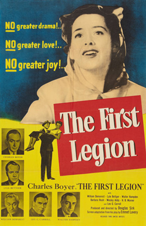
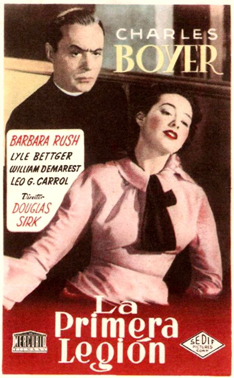
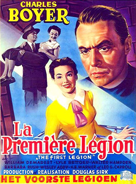

The First Legion
Charles Boyer
Lyle Bettger
Barbara Rush
H. B. Warner
Taylor Holmes
George Zucco
Clifford Brooke
Molly Lamont
Bill Edwards
SYNOPSIS
Fr. John Fulton, a Jesuit instructor in a seminary school, feels he has lost his vocation. A talk with his friend Fr. Marc Arnoux is no help. But on the night he plans to leave the seminary (and the Order) his old teacher Fr. Jose Sierra miraculously gets up and walks, to tell him to stay. The young, wheelchair-bound neighbour Terry Gilmartin regains hope a similar miracle might allow her to walk; her physician, Dr. Peter Morrell, the same one who attended Fr. Sierra, and who is in love with Terry, confesses that he had engineered Sierra's miraculous recovery, to Fr. Arnoux, but refuses his advice to tell the truth.
The Jesuit seminary rector orders Fr. Arnoux to plead the validity of the miracle before the Vatican, in Rome. When his highly respected subordinate refuses, the rector dies of a heart attack. At that point Dr. Morrell admits his deception, in particular to Terry, who goes to the seminary chapel and, miraculously, gets out of her wheelchair, at the moment she prays for Dr. Morrell.
The First Legion, chooses via its title, a military metaphor for the Jesuits who are its main protagonists, anticipating the later Battle Hymn (1957) in its blend of the martial and the spiritual. A shame this promising idea wasn’t carried further, so that the various ranks of priest might have been presented in the manner of their equivalents in, say, the Marines. The movie does feature William Demarest, that eternal sergeant, as a no-nonsense parish priest, but for the rest of its cast it uses Charles Boyer’s ability to suggest intellectual rigor, and surrounds him with sexless men of the order of Leo G. Carroll. Only George Zucco looks as if he might give the choir boys any sleepless nights.
The plot hinges around a bogus miracle, which occurs, suggestively enough, during a movie show. And the lame man who walks is played by H.B. Warner, famously a Jesus for Cecil B. DeMille.


